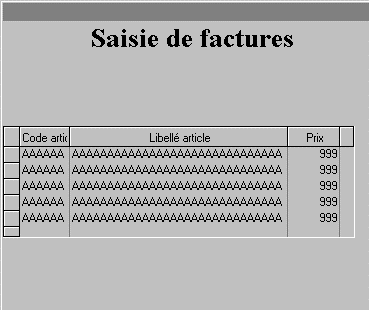
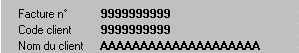
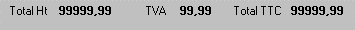
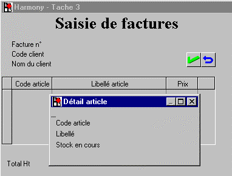

Au départ, toute application Windows ouvre toujours une première fenêtre, dite fenêtre principale. Ensuite, l'application peut ouvrir une ou plusieurs fenêtres complémentaires en cascade (par exemple une fenêtre de consultation ou de saisie annexe, elle-même ouvrant une fenêtre de confirmation de saisie).
L'éditeur Xwin permet de dessiner des "pages de masque". Une propriété de la page permet de faire la distinction entre les deux types d'écran, "Page" et "Fenêtre" :
Une page de type "Page" s'affiche à l'intérieur de la fenêtre courante.
Une page peut éventuellement recouvrir (et effacer) une page déjà affichée.
Une page de type "Fenêtre" ouvre une fenêtre complémentaire.
Remarque importante : deux ou plusieurs pages peuvent aussi remplir un même écran.
Exemple
Soit un programme de saisie d'une facture. L'écran de saisie est divisé en trois parties : une zone de saisie de l'entête de facture, une zone de saisie des lignes détail, une zone de saisie du pied. De plus, la frappe d'une touche de fonction permet de consulter le stock de l'article en cours de saisie dans une fenêtre secondaire .
Cet exemple nécessite la définition de 4 pages Xwin :
une page "de fond d'écran" incluant les lignes détail,
une page présentant l'entête de la facture,
une page présentant le pied de la facture,
une page de type fenêtre affichant le détail du stock d'un article.
La page de fond incluant les lignes détail (de type "Page") :

Les pages d'entête et de pied (de type "Page", sans effacement ou en effacement partiel pour ne pas effacer la page de fond).


Résultat final après ouverture de la fenêtre stock (de type "Fenêtre") :
